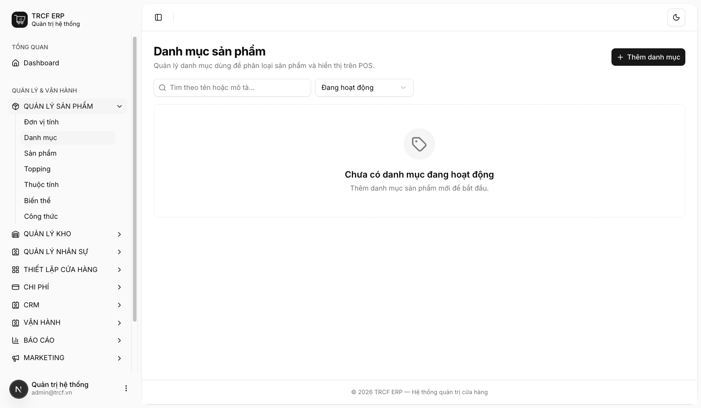
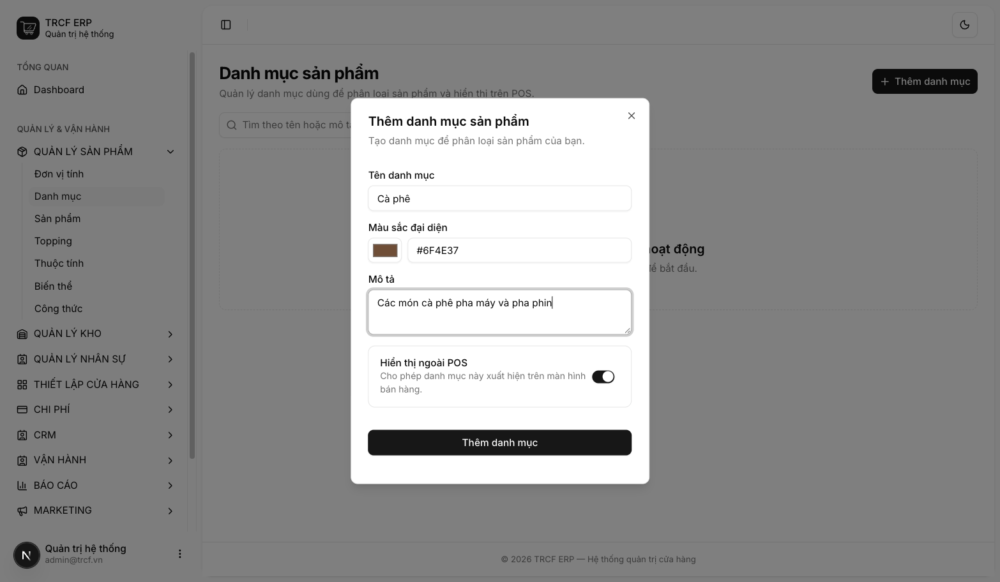
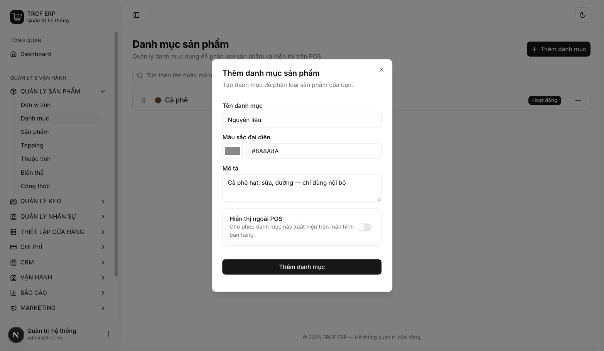
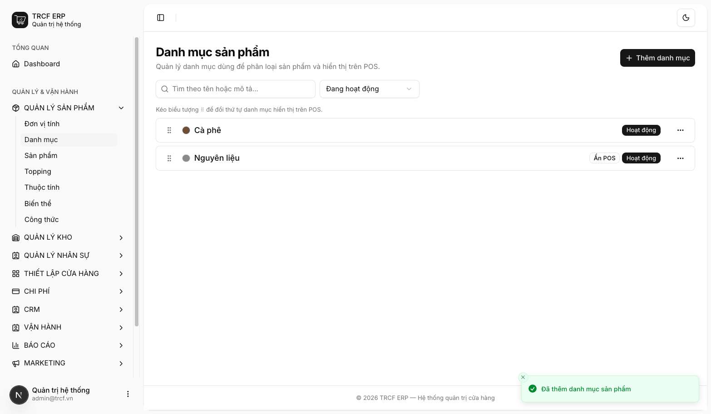

Chương 3 · Quản lý sản phẩm
3.1 Tạo danh mục sản phẩm POS
1. Đường dẫn vào chức năng
Menu trái: Quản lý sản phẩm → Danh mục (địa chỉ /product-categories).
2. Ví dụ nền và các bước thực hiện
Ví dụ: quán tạo 2 danh mục.
- "Cà phê": nhóm món bán, hiện trên màn bán hàng.
- "Nguyên liệu": cà phê hạt, sữa, đường — chỉ dùng nội bộ, ẩn khỏi màn bán hàng.
Bước 1Mở trang Danh mục
- Bấm Quản lý sản phẩm ở menu trái.
- Chọn Danh mục.
- Danh sách trống nếu chưa có danh mục nào.

Bước 2Thêm danh mục hiện trên POS
- Bấm Thêm danh mục.
- Tên danh mục: nhập "Cà phê".
- Màu sắc đại diện: nhập "#6F4E37" hoặc bấm ô màu để chọn.
- Mô tả: nhập "Các món cà phê pha máy và pha phin."
- Hiển thị ngoài POS: để bật.
- Bấm nút Thêm danh mục trong hộp thoại.

Bước 3Thêm danh mục chỉ dùng nội bộ
- Bấm Thêm danh mục.
- Tên danh mục: nhập "Nguyên liệu".
- Màu sắc đại diện: nhập "#8A8A8A".
- Mô tả: nhập "Cà phê hạt, sữa, đường — chỉ dùng nội bộ."
- Hiển thị ngoài POS: gạt sang tắt.
- Bấm nút Thêm danh mục trong hộp thoại.

Bước 4Kiểm tra và xếp thứ tự
- Thấy thông báo “Đã thêm danh mục sản phẩm”.
- Danh mục tắt hiển thị có nhãn Ẩn POS.
- Kéo biểu tượng ⠿ bên trái để đổi thứ tự.
- Xếp nhóm bán chạy lên đầu.

3. Giải thích các trường
| Trường | Điền gì | Bắt buộc |
|---|---|---|
| Tên danh mục | VD "Cà phê", "Trà trái cây" | ✅ |
| Màu sắc đại diện | Màu nút trên màn bán hàng, giúp thu ngân nhận diện nhanh | — |
| Mô tả | Ghi chú nội bộ | — |
| Hiển thị ngoài POS | Bật: hiện trên màn bán hàng. Tắt: chỉ dùng nội bộ | — |
4. Lưu ý quan trọng
⚠️
Danh mục đang gắn sản phẩm thì không xoá được.
- Muốn ẩn khỏi POS: tắt Hiển thị ngoài POS.
- Đừng xoá.
💡
Gom nguyên liệu vào một danh mục riêng và tắt hiển thị.
- Quản lý vẫn lọc được.
- Thu ngân không thấy nguyên liệu trên màn bán hàng.